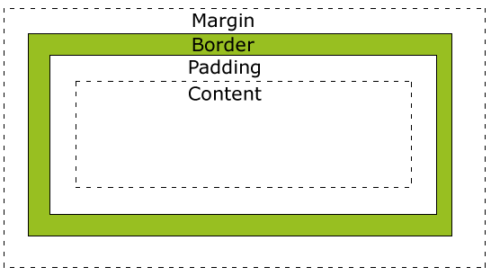

Note: This post is intended for a non-technical audience.
What is the difference between margin, border, and padding?
Take a careful look at this webpage. Everything you see on this webpage --this text, my name, the links-- are all called "html elements". In other words, I had to create a special kind of document (called an html document) and specifically write instructions in the document for everything you see on this page.
Even though all the html elements have diverse shapes, the document automatically puts invisible squares around each element. We call this phenonemon, the "CSS box model".
Examine this diagram drawn by W3Schools:

All html elements have padding, a border, and margin surrounding the elements. It's possible to set them to 0 so they don't really exist and the elements can all touch each other, but it's still technically there.
Padding is the immediate area around the html element or content. It is automatically transparant, but you can set it to be large or smaller or colored.
A border is an area that surround the padding and content. It's usually set as transparent as well, but the benefit of it's existence is that sometimes you can set it to a certain color. This will result in an outline (at a thickness you can set) around the content without filling up the entire padding.
There are a variety of styles that you can set as your border:
- dotted
- dashed
- solid
- double
- groove
- ridge
- inset
- outset
Margin is the area immediatly outside the border. It is transparent as well normally, but can customized to the size and color of your choosing.
The reasons why padding, border, and margin exists in the first place is to help web developers arrange html elements around a webpage in a consistent, precise way. If you are customizing a website, it's important to understand these concepts.
What are the best practices associated with using classes vs. ids?
Before I talk about best practices, let me step back and first describe the concepts of "classes" and "ids". "Classes" and "ids" are a type of "CSS selectors", which means they are used to change the style of a specific type of HTML element.
Here are a couple examples of a CSS "class" and "id":
.exampleclass { font-size: 14px; color: navy }
#exampleid { font-size: 14px; color: navy }
If you couldn't guess from these two lines, applying this class or id to an element will cause the font-size of the html element to be 14px and the color to be navy.
Classes and ids give web developers the ability to customize one or a bunch of html elements cleanly and quickly.
The difference between a class and id is that classes can be used across multiple html elements whereas ids can only be used once in a document to identify one specific element.
With that difference in mind, the best practice when deciding between using classes and ids is to think about whether the given properties can be applies across multiple elements or just one. If the properties are really that unique, you can use id. However, if there's even a slight chance that you might revisit and use the class, use class.
What are the differences between relative, absolute, fixed, and static positioning?
Every element's positioning on a page can be cutomized. The best for me to understand the difference between all these types of positioning is to define them all:
- static- elements will show up in order and as they appear in the document flow.In other words, if there were an image that came before a text in the html document, on the webpage, the image will be positioned earlier and before the text. Every element is essentially set to have static positioning, so this is the standard even if you didn't even specify that it should be static. The only reason someone would actually specify static positioning is if there were some other property that forcefully applied a position to the html element.
- relative- The element will appear on the page relative to its parent html element. It's important to set an element with relative position if it were a home button that always appear in the upper right of the window so that users can return back to the home page. Or a back to the top button that always appears at the bottom of the page so that users can easily scroll back up to the top.
- absolute- This type of positioning is applied to a html element when you want to place an element in a super precise location on a page. This value will be relative to its parent element or in the case of no parent element, it will be relative to the html page itself.
- fixed- Fixed positioning will be applied to a element if you want it to stay in the same spot on the page at all times no matter how far you move down the page. An example of something that would need fixed positioning would be a header or sidebar that stays on the page at all times.
What does it mean to display inline vs using inline block?
When you apply diplay: inline to an element, the surrounding elements will respect its left and right margins, but not its top and bottom one. It also cannot have a width and height set. Applying display: block to ane element will force line break between elements and all four margins can be customized and will be respected by other elements. A element whose display is inline-block means that other elements can sit on the right and left while respecting the all four margins.
You use inline to let elements be right and left of each other. You use inline-block if you want elements to be right and left of each other without interferring with their margins.
A picture is equivalent to a thousand words, so I will include a picture from stackoverflow below to make the concept a little more clear:

I hope you find these concepts interesting. Pleaes let me know if you see any major typos or have any other interesting CSS concepts for me to talk about in my blog.